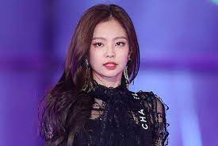

BlackPink
O BLACKPINK é um grupo de K-pop feminino formado pela YG Entertainment em 2016. Ele é composto por 4 integrantes: Jisoo, Jennie, Rosé e Lisa.
O grupo estreou oficialmente em 2016 com o single Square One, que foi composto das músicas “Whistle” e “BOOMBAYAH”, os primeiros sucessos do grupo.
O grupo teve um sucesso estrondoso em 2020, quando alcançou a posição 33 da Billboard Hot 100 com os singles “How You Like That”
e “Sour Candy”, e a posição 24 com o single “Kill This Love”, de 2019.
Também foram o primeiro grupo feminino coreano a entrar no topo das paradas dos Artistas Emergentes na Billboard e três vezes no topo da tabela World Digital Song Sales da Billboard.
Apesar de terem estreado oficialmente somente em 2016, a história do BLACKPINK é um pouco mais antiga e remonta ao ano de 2010, quando YG Entertainment começou a fazer testes dentro e fora da Coreia do Sul procurando talentos que fossem adolescentes ou pré-adolescentes para criar um novo grupo feminino.
Todas as atuais integrantes do BLACKPINK entraram na empresa como treinees e os preparativos para a estreia do grupo começaram já em 2011.
A partir de então, surgiram diversos rumores sobre um novo grupo feminino da YG Entertainment, mas nenhuma informação oficial foi divulgada até 2016.
Jennie foi a primeira integrante a ser revelada, seguida por Lisa, Jisoo e Rosé respectivamente, lançando o single Square One logo em seguida.
Alguns meses depois, lançaram o segundo single, Square Two, que era composto pelas faixas “Playing With Fire” e “Stay”.
O reconhecimento internacional, entretanto, só veio em 2018, o EP japonês de estreia do grupo, Re: BLACKPINK, foi relançado.
No mesmo ano, em 15 de Junho, o grupo lançou mais um EP, Square Up, e, em 7 de Julho, a Dua Lipa anunciou que iria fazer uma colaboração com o grupo na faixa “Kiss and Make Up”.
A partir daí, o grupo foi crescendo no ocidente e ganhando cada vez mais espaço, com seus lançamentos quebrando ainda mais recordes do que os anteriores.
Em 2020, elas fizeram uma faixa especial para o álbum Chromatica, de Lady Gaga, na faixa “Sour Candy”, que foi lançada como single promocional do álbum.
Desde então, elas seguem conquistando fãs ao redor do mundo e essa história de sucesso só tende a ser maior nos próximos anos
Jennie

Instagram da Jennie
Jisoo

Instagram da Jisoo
Liza
Instagram da Lisa
Rose

Instagram da Rose
Spotify do Grupo